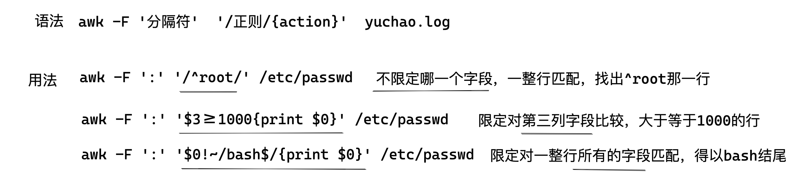
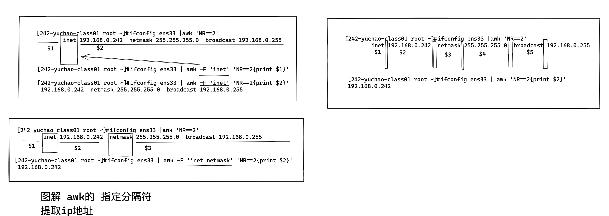
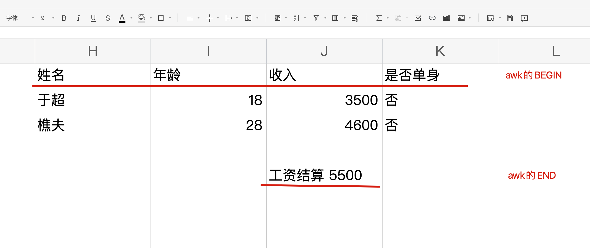
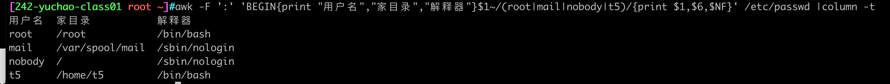
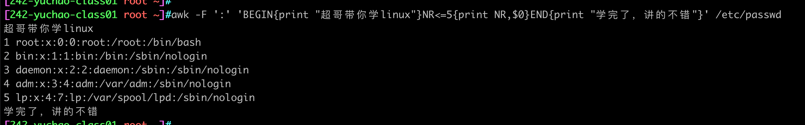
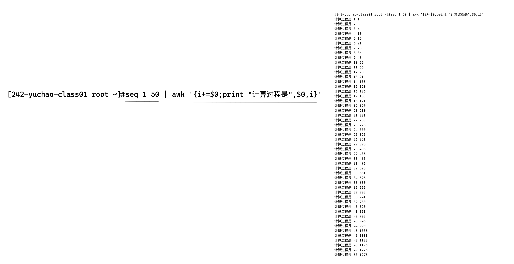

awk进阶
awk模式种类
awk的模式分为这几种
- 正则表达式
- 基本正则
- 扩展正则
- 比较表达式
- 范围表达式
- 特殊模式
- BEGIN
- END
awk比较运算符（语法）
| 关系运算符 | 解释 | 示例 |
|---|---|---|
| < | 小于 | x<y |
| <= | 小于等于 | x<=y |
| == | 等于 | x==y |
| != | 不等于 | x!=y |
| >= | 大于等于 | x>=y |
| > | 大于 | x>y |
| ~ | 匹配正则 | x~/正则/ |
| !~ | 与表达式不匹配 | x!~/正则/ |
正则表达式语法（awk模式）
- 正则表达式作用在于在行数据中匹配想要的字符串、然后执行对应的action动作
- 支持基本正则、扩展正则
awk '/正则表达式/{print $0}'
再来看一下awk的语法，模式也可以理解为是条件
awk [option] 'pattern[action]' file ...
awk默认是按行处理文本，如果不指定任何模式（条件），awk默认一行行处理
如果指定了模式，只有符合模式的才会被处理
经典语法图解

awk正则练习/etc/passwd
创建测试数据
创建用户
[242-yuchao-class01 root ~]#for i in `seq 10`;do useradd t${i};done
删除用户
for i in `seq 10`;do userdel -rf t${i};done
awk提取出/etc/passwd 中root用户行
简写
[242-yuchao-class01 root ~]#awk -F ':' '/^root/' /etc/passwd
root:x:0:0:root:/root:/bin/bash
或者写全了动作
[242-yuchao-class01 root ~]#awk -F ':' '/^root/{print $0}' /etc/passwd
root:x:0:0:root:/root:/bin/bash
提取root用户、以及它的登录解释器信息
[242-yuchao-class01 root ~]#awk -F ':' '/^root/{print $1,$NF}' /etc/passwd
root /bin/bash
awk提取出允许登录的用户行
[242-yuchao-class01 root ~]#awk -F ':' '/bash$/' /etc/passwd
root:x:0:0:root:/root:/bin/bash
t1:x:1001:1001::/home/t1:/bin/bash
t2:x:1002:1002::/home/t2:/bin/bash
t3:x:1003:1003::/home/t3:/bin/bash
t4:x:1004:1004::/home/t4:/bin/bash
t5:x:1005:1005::/home/t5:/bin/bash
t6:x:1006:1006::/home/t6:/bin/bash
t7:x:1007:1007::/home/t7:/bin/bash
t8:x:1008:1008::/home/t8:/bin/bash
t9:x:1009:1009::/home/t9:/bin/bash
t10:x:1010:1010::/home/t10:/bin/bash
awk提取出用户名以t开头的行
方法1
[242-yuchao-class01 root ~]#awk -F ':' '/^t/' /etc/passwd
tss:x:59:59:Account used by the trousers package to sandbox the tcsd daemon:/dev/null:/sbin/nologin
t1:x:1001:1001::/home/t1:/bin/bash
t2:x:1002:1002::/home/t2:/bin/bash
t3:x:1003:1003::/home/t3:/bin/bash
t4:x:1004:1004::/home/t4:/bin/bash
t5:x:1005:1005::/home/t5:/bin/bash
t6:x:1006:1006::/home/t6:/bin/bash
t7:x:1007:1007::/home/t7:/bin/bash
t8:x:1008:1008::/home/t8:/bin/bash
t9:x:1009:1009::/home/t9:/bin/bash
t10:x:1010:1010::/home/t10:/bin/bash
方法2
[242-yuchao-class01 root ~]#awk -F ':' '/^t.*/' /etc/passwd
提取出由用户自己创建的用户
（uid大于1000）
[242-yuchao-class01 root ~]#awk -F ':' '$3>=1000{print $0}' /etc/passwd
www:x:1000:1000::/home/www:/sbin/nologin
t1:x:1001:1001::/home/t1:/bin/bash
t2:x:1002:1002::/home/t2:/bin/bash
t3:x:1003:1003::/home/t3:/bin/bash
t4:x:1004:1004::/home/t4:/bin/bash
t5:x:1005:1005::/home/t5:/bin/bash
t6:x:1006:1006::/home/t6:/bin/bash
t7:x:1007:1007::/home/t7:/bin/bash
t8:x:1008:1008::/home/t8:/bin/bash
t9:x:1009:1009::/home/t9:/bin/bash
t10:x:1010:1010::/home/t10:/bin/bash
（家目录在/home下的用户）
[242-yuchao-class01 root ~]#awk '/\/home.*/' /etc/passwd
www:x:1000:1000::/home/www:/sbin/nologin
t1:x:1001:1001::/home/t1:/bin/bash
t2:x:1002:1002::/home/t2:/bin/bash
t3:x:1003:1003::/home/t3:/bin/bash
t4:x:1004:1004::/home/t4:/bin/bash
t5:x:1005:1005::/home/t5:/bin/bash
t6:x:1006:1006::/home/t6:/bin/bash
t7:x:1007:1007::/home/t7:/bin/bash
t8:x:1008:1008::/home/t8:/bin/bash
t9:x:1009:1009::/home/t9:/bin/bash
t10:x:1010:1010::/home/t10:/bin/bash
提取出禁止登录的用户
对bash的解释器行，结果取反
对最后一个字段进行正则匹配
awk -F ':' '$NF!~/bash$/{print $0}' /etc/passwd
对所有字段正则匹配
awk -F ':' '$0!~/bash$/{print $0}' /etc/passwd
指定找出nologin的行
[242-yuchao-class01 root ~]#awk -F ':' '/nologin/{print $0}' /etc/passwd
awk正则提取ip
1.指定行号，提取ip
[242-yuchao-class01 root ~]#ifconfig ens33 | awk 'NR==2{print $2}'
192.168.0.242
2.指定分隔符提取ip
[242-yuchao-class01 root ~]#ifconfig ens33 | awk -F 'inet|netmask' 'NR==2{print $2}'
192.168.0.242

判断常用服务端口是否存活
提取出http和ssh服务的端口
方法1，指定对第四列字段进行正则匹配，是否存在22或80端口
[242-yuchao-class01 root ~]#netstat -tunlp|awk '$4~/22|80/{print $0}'
tcp 0 0 0.0.0.0:80 0.0.0.0:* LISTEN 7040/nginx: master
tcp 0 0 0.0.0.0:22 0.0.0.0:* LISTEN 900/sshd
tcp6 0 0 :::80 :::* LISTEN 7040/nginx: master
tcp6 0 0 :::22 :::* LISTEN 900/sshd
方法2，整行匹配，偷懒写法
[242-yuchao-class01 root ~]#netstat -tunlp|awk '/22|80/'
tcp 0 0 0.0.0.0:80 0.0.0.0:* LISTEN 7040/nginx: master
tcp 0 0 0.0.0.0:22 0.0.0.0:* LISTEN 900/sshd
tcp6 0 0 :::80 :::* LISTEN 7040/nginx: master
tcp6 0 0 :::22 :::* LISTEN 900/sshd
提取/etc/passwd的10~20行
要求且显示行号
[242-yuchao-class01 root ~]#awk 'NR>=10&&NR<=20{print NR,$0}' /etc/passwd
10 operator:x:11:0:operator:/root:/sbin/nologin
11 games:x:12:100:games:/usr/games:/sbin/nologin
12 ftp:x:14:50:FTP User:/var/ftp:/sbin/nologin
13 nobody:x:99:99:Nobody:/:/sbin/nologin
14 systemd-network:x:192:192:systemd Network Management:/:/sbin/nologin
15 dbus:x:81:81:System message bus:/:/sbin/nologin
16 polkitd:x:999:998:User for polkitd:/:/sbin/nologin
17 tss:x:59:59:Account used by the trousers package to sandbox the tcsd daemon:/dev/null:/sbin/nologin
18 sshd:x:74:74:Privilege-separated SSH:/var/empty/sshd:/sbin/nologin
19 postfix:x:89:89::/var/spool/postfix:/sbin/nologin
20 nginx:x:998:996:Nginx web server:/var/lib/nginx:/sbin/nologin
awk范围模式
- 可以用到正则
- 可以用到比较运算符
范围模式就是从某一行到某一行，均是符合条件的行。
语法
awk '/regex1/,/regex2/{action}' yuchao.log
显示root行到mail用户的行
处理/etc/passwd
且显示行号
[242-yuchao-class01 root ~]#awk '/^root/,/^mail/{print NR,$0}' /etc/passwd
1 root:x:0:0:root:/root:/bin/bash
2 bin:x:1:1:bin:/bin:/sbin/nologin
3 daemon:x:2:2:daemon:/sbin:/sbin/nologin
4 adm:x:3:4:adm:/var/adm:/sbin/nologin
5 lp:x:4:7:lp:/var/spool/lpd:/sbin/nologin
6 sync:x:5:0:sync:/sbin:/bin/sync
7 shutdown:x:6:0:shutdown:/sbin:/sbin/shutdown
8 halt:x:7:0:halt:/sbin:/sbin/halt
9 mail:x:8:12:mail:/var/spool/mail:/sbin/nologin
显示bin用户到第五行
且显示行号
[242-yuchao-class01 root ~]#awk '/^bin/,NR==5{print NR,$0}' /etc/passwd
2 bin:x:1:1:bin:/bin:/sbin/nologin
3 daemon:x:2:2:daemon:/sbin:/sbin/nologin
4 adm:x:3:4:adm:/var/adm:/sbin/nologin
5 lp:x:4:7:lp:/var/spool/lpd:/sbin/nologin
awk特殊模式BEGIN和END

BEGIN模式
- BEGIN模式作用是在awk开始读取文件行数据、之前就先执行，一般用于预定义一些操作，比如数据的表头格式化等。
- BEGIN后面必须跟上action动作
BEGIN打印
显示/etc/passwd前五行，且打印BEGIN动作
[242-yuchao-class01 root ~]#awk 'BEGIN{print "于超老师正在带你学习awk"}NR<=5{print $0}' /etc/passwd
于超老师正在带你学习awk
root:x:0:0:root:/root:/bin/bash
bin:x:1:1:bin:/bin:/sbin/nologin
daemon:x:2:2:daemon:/sbin:/sbin/nologin
adm:x:3:4:adm:/var/adm:/sbin/nologin
lp:x:4:7:lp:/var/spool/lpd:/sbin/nologin
awk格式化打印/etc/passwd
提取root、mail、nobody三个用户信息
- 名字
- 家目录
- 登录解释器
且设置好表头（格式化打印）

[242-yuchao-class01 root ~]#awk -F ':' 'BEGIN{print "用户名","家目录","解释器"}$1~/(root|mail|nobody|t5)/{print $1,$6,$NF}' /etc/passwd |column -t
用户名 家目录 解释器
root /root /bin/bash
mail /var/spool/mail /sbin/nologin
nobody / /sbin/nologin
t5 /home/t5 /bin/bash
BEGIN简单玩法
只打印
处理数据之前的动作
[242-yuchao-class01 root ~]#awk 'BEGIN{print "于超老师带你学linux"}'
于超老师带你学linux
计算器
[242-yuchao-class01 root ~]#awk 'BEGIN{print 10/3}'
3.33333
[242-yuchao-class01 root ~]#awk 'BEGIN{print 10/3+2*3}'
9.33333
awk自定义变量
数值变量
[242-yuchao-class01 root ~]#awk 'BEGIN{x=3;y=8;print x*y}'
24
字符串变量
[242-yuchao-class01 root ~]#awk 'BEGIN{name="于超";print name,"正在教你学linux"}'
于超 正在教你学linux
END模式
- 和BEGIN相反，END就是awk结束后的操作
END是awk读取完所有的文件后，再执行END模块，一般用来总结、格式化打印一个结果
END仅会在awk所有行数据处理完毕后，执行END动作。
简单打印

[242-yuchao-class01 root ~]#awk -F ':' 'BEGIN{print "超哥带你学linux"}NR<=5{print NR,$0}END{print "学完了，讲的不错"}' /etc/passwd
超哥带你学linux
1 root:x:0:0:root:/root:/bin/bash
2 bin:x:1:1:bin:/bin:/sbin/nologin
3 daemon:x:2:2:daemon:/sbin:/sbin/nologin
4 adm:x:3:4:adm:/var/adm:/sbin/nologin
5 lp:x:4:7:lp:/var/spool/lpd:/sbin/nologin
学完了，讲的不错
计算/etc/passwd行数
显示/etc/passwd的用户名、登录解释器、且在结尾显示行数。
[242-yuchao-class01 root ~]#awk -F ':' '{print $1,$NF}END{print "总行数：",NR}' /etc/passwd
root /bin/bash
bin /sbin/nologin
daemon /sbin/nologin
adm /sbin/nologin
lp /sbin/nologin
sync /bin/sync
shutdown /sbin/shutdown
halt /sbin/halt
mail /sbin/nologin
operator /sbin/nologin
games /sbin/nologin
ftp /sbin/nologin
nobody /sbin/nologin
systemd-network /sbin/nologin
dbus /sbin/nologin
polkitd /sbin/nologin
tss /sbin/nologin
sshd /sbin/nologin
postfix /sbin/nologin
nginx /sbin/nologin
www /sbin/nologin
t1 /bin/bash
t2 /bin/bash
t3 /bin/bash
t4 /bin/bash
t5 /bin/bash
t6 /bin/bash
t7 /bin/bash
t8 /bin/bash
t9 /bin/bash
t10 /bin/bash
总行数： 31
统计如下数据，有多少空行
测试数据
[242-yuchao-class01 root ~]#cat t1.log -n
1 I am teacher yuchao.
2 I teach linux,python!
3
4 I like english
5
6 My website is http://yuchaoit.cn
7 Our school site is https://apecome.com
8 My qq num is 877348180
9
10
11
12
13 #my qq num is not 87777773333344444888811188880000
14 #
15 #Goog good study , day day up!
统计空行数，用到了awk的变量功能
awk变量计数器
变量用法
num+=1
意思是 num=1 ; num=num+1
定义num变量，当做计数器，awk每处理一行，计数器就加一
实践
[242-yuchao-class01 root ~]#awk '{num+=1;print "num的值是",num}' t1.log
num的值是 1
num的值是 2
num的值是 3
num的值是 4
num的值是 5
num的值是 6
num的值是 7
num的值是 8
num的值是 9
num的值是 10
num的值是 11
num的值是 12
num的值是 13
num的值是 14
num的值是 15
统计空行数（END总结）
[242-yuchao-class01 root ~]#awk '/^$/{num+=1;print $0}END{print "文件空行数是：",num}' t1.log
文件空行数是： 6
可以省去打印的动作、直接统计
[242-yuchao-class01 root ~]#awk '/^$/{num+=1}END{print "文件空行数是：",num}' t1.log
文件空行数是： 6
END计算器
面试题，用awk计算 1+2+3+...+50
答案
[242-yuchao-class01 root ~]#seq 1 50 | awk '{i+=$0}END{print "1到50叠加总和是：",i}'
1到50叠加总和是： 1275
图解、查看awk计算的过程

模式总结
- awk核心就是模式、动作、找到数据之后要干什么
- 模式就是awk的查找条件
- 正则表达式模式、
- 条件表达式，比较大小、是否相等
- 范围表达式，从哪一行，找到哪一行
- 以及awk的特殊模式，设定开始前、结束后的条件+动作
- BEGIN
- END